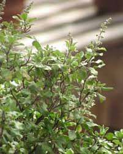

Tulsi
A revered plant in the Indian subcontinent and considered as holy in the Hindu religion, there are several varieties available in the market. Manjari, Lakshmi Tulsi, Krishna Tulasi, Ram Tulasi, Kapoor Tulsi, Trittavu Tulsi are some that households in India have been growing and worshipping for ages.
Botanical name: Ocimum Sanctum
Benefits: brings peace, prosperiety and aethestic vibes